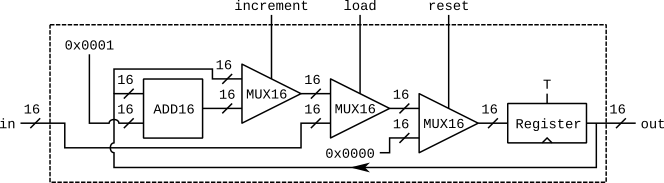
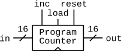
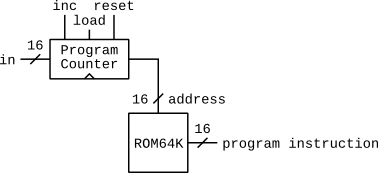
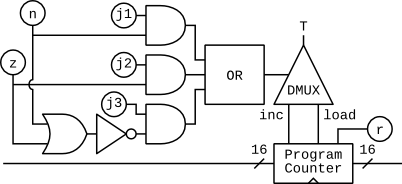
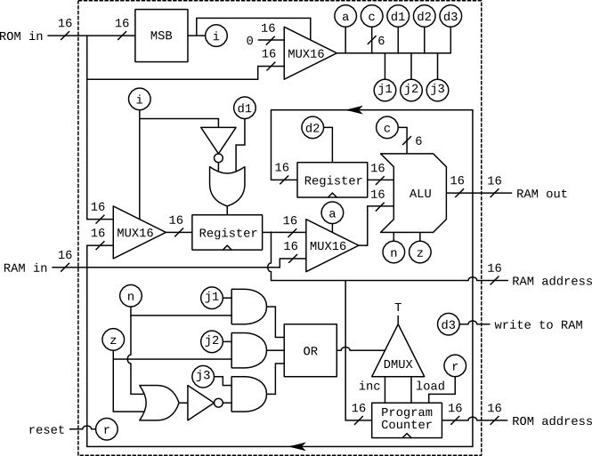
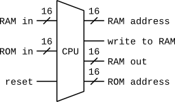
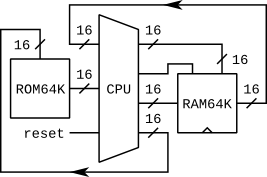

| condition | meaning | ||
|---|---|---|---|
| j1 | j2 | j3 | |
| <0 | =0 | >0 | |
| 0 | 0 | 0 | don't jump |
| 0 | 0 | 1 | if ALU output > 0 jump |
| 0 | 1 | 0 | if ALU output == 0 jump |
| 0 | 1 | 1 | if ALU output >= 0 jump |
| 1 | 0 | 0 | if ALU output < 0 jump |
| 1 | 0 | 1 | if ALU output != 0 jump |
| 1 | 1 | 0 | if ALU output <= 0 jump |
| 1 | 1 | 1 | always jump |
the new switches added to our programmable counter:



a picture of a real 8 bit CPU

This instruction must have the MSB (bit number 16) set to 0. The rest of the bits encode "a", the 15 bits of number to load.
| hexadecimal digit | 4 | 3 | 2 | 1 | ||||||||||||
|---|---|---|---|---|---|---|---|---|---|---|---|---|---|---|---|---|
| binary digit | 16 | 15 | 14 | 13 | 12 | 11 | 10 | 9 | 8 | 7 | 6 | 5 | 4 | 3 | 2 | 1 |
| value | 0 | a15 | a14 | a13 | a12 | a11 | a10 | a9 | a8 | a7 | a6 | a5 | a4 | a3 | a2 | a1 |
This instruction must have the MSB (bit number 16) set to 1. The next two bits are not used but must be set to 1. The remaining bits are split between the "a", "c", "d", and "j" switches.
| hexadecimal digit | 4 | 3 | 2 | 1 | ||||||||||||
|---|---|---|---|---|---|---|---|---|---|---|---|---|---|---|---|---|
| binary digit | 16 | 15 | 14 | 13 | 12 | 11 | 10 | 9 | 8 | 7 | 6 | 5 | 4 | 3 | 2 | 1 |
| value | 1 | 1 | 1 | a | c1 | c2 | c3 | c4 | c5 | c6 | d1 | d2 | d3 | j1 | j2 | j3 |
| hexadecimal | binary | hexadecimal | binary |
|---|---|---|---|
| 0 | 0000 | 8 | 1000 |
| 1 | 0001 | 9 | 1001 |
| 2 | 0010 | A | 1010 |
| 3 | 0011 | B | 1011 |
| 4 | 0100 | C | 1100 |
| 5 | 0101 | D | 1101 |
| 6 | 0110 | E | 1110 |
| 7 | 0111 | F | 1111 |
update the ball's height: ball-y-position = ball-y-position + ball-y-velocity set MSB=F number=0x0003 set MSB=T a=T c=TTFFFF d=FTF set MSB=F number=0x0001 set MSB=T a=T c=FFFFTF d=FFT
ROM : code in binary notes
update ball-y-position: ball-y-position = ball-y-position + ball-y-velocity
0x0000: 0000 0000 0000 0011 write address of ball-y-velocity to address register
0x0001: 1111 1100 0001 0000 write ball-y-velocity from memory to data register
0x0002: 0000 0000 0000 0001 write address of ball-y-position to address register
0x0003: 1111 0000 1000 1000 write ball-y-position + ball-y-velocity to ball-y-position in RAM
ROM : code notes
update ball-y-position: ball-y-position = ball-y-position + ball-y-velocity
0x0000: 0x0003 write address of ball-y-velocity to address register
0x0001: 0xFC10 write ball-y-velocity from memory to data register
0x0002: 0x0001 write address of ball-y-position to address register
0x0003: 0xF088 write ball-y-position + ball-y-velocity to ball-y-position in RAM
RAM :
0x0000: ball-x-position
0x0001: ball-y-position
0x0002: ball-x-velocity
0x0003: ball-y-velocity
ROM : code notes
update ball-y-position: ball-y-position = ball-y-position + ball-y-velocity
0x0000: 0x0003 write address of ball-y-velocity to address register
0x0001: 0xFC10 write ball-y-velocity from memory to data register
0x0002: 0x0001 write address of ball-y-position to address register
0x0003: 0xF088 write ball-y-position + ball-y-velocity to ball-y-position in RAM
check if the ball is off the top: (ball-y-position-480 >= 0)
0x0004: 0x01E0 write 480 to address register
0x0005: 0xEC10 write value of address register to data register
0x0006: 0x0001 write address of ball-y-position to address register
0x0007: 0xF1D0 write ball-y-position - 480 to data register (B-A)
0x0008: 0x0010 write ROM address of "invert ball-y-velocity" code to address register
0x0009: 0xE303 jump to "invert ball-y-velocity" code if data register >= 0
check if the ball is off the bottom: (ball-y-position < 0)
0x000A: 0x0001 write address of ball-y-position to address register
0x000B: 0xFC10 write ball-y-position to data register
0x000C: 0x0010 write ROM address of "invert ball-y-velocity" code to address register
0x000D: 0xE304 jump to "invert ball-y-velocity" code if data register < 0
0x000E: 0x0012 write ROM address of "end of loop" code to address register
0x000F: 0xEFC7 jump to "end of loop" code
invert ball-y-velocity: ball-y-velocity = -ball-y-velocity
0x0010: 0x0003 write address of ball-y-velocity to address register
0x0011: 0xFCC8 write -(ball-y-velocity) to ball-y-velocity in memory
end of loop
0x0012: 0x0000 write ROM address of "update ball-y-position" code to address register
0x0013: 0xEFC7 jump to "update ball-y-position"
RAM :
0x0000: ball-x-position
0x0001: ball-y-position
0x0002: ball-x-velocity
0x0003: ball-y-velocity
ROM : code notes
update ball-y-position: ball-y-position = ball-y-position + ball-y-velocity
0x0000: 0x0003 write address of ball-y-velocity to address register
0x0001: 0xFC10 write ball-y-velocity from memory to data register
0x0002: 0x0001 write address of ball-y-position to address register
0x0003: 0xF098 write ball-y-position + ball-y-velocity to ball-y-position in RAM and data register
check if the ball is off the bottom: (ball-y-position < 0)
0x0004: 0x000A write ROM address of "invert ball-y-velocity" code to address register
0x0005: 0xE304 jump to "invert ball-y-velocity" code if data register < 0
check if the ball is off the top: (ball-y-position-480 >= 0)
0x0006: 0x01E0 write 480 to address register
0x0007: 0xE4D0 write ball-y-position - 480 to data register (A-B)
0x0008: 0x000C write ROM address of "end of loop" code to address register
0x0009: 0xE304 jump to "end of loop" code if data register < 0
invert ball-y-velocity: ball-y-velocity = -ball-y-velocity
0x000A: 0x0003 write address of ball-y-velocity to address register
0x000B: 0xFCC8 write -(ball-y-velocity) to ball-y-velocity in memory
end of loop
0x000C: 0x0000 write ROM address of "update ball-y-position" code to address register
0x000D: 0xEFC7 jump to "update ball-y-position"
{kind=link}